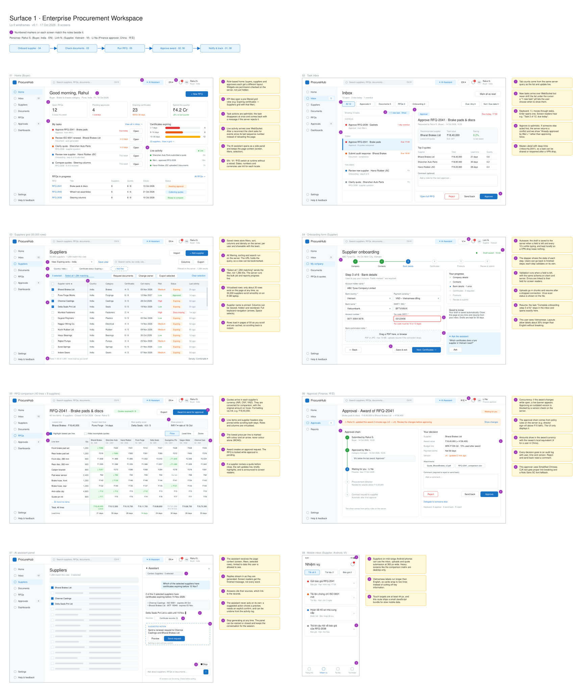

Connections and protocols
| # | Connection | Protocol | What travels and why |
|---|
| ① | User → browser app | HTTPS (TLS 1.2+) over VPN/VDI | The app is a single-page app; one build serves all roles and languages |
| ② | Browser → CDN | HTTPS GET, HTTP/2, immutable cache | Hashed JS/CSS, locale JSON per language and screen, font subsets, runtime config.json |
| ③ | Browser ↔ BFF: sign-in | HTTPS, OIDC redirect, session cookie | Cookie is HttpOnly; Secure; SameSite=Lax; the browser never sees an access token |
| ④ | BFF ↔ identity provider | HTTPS, OIDC Authorization Code + PKCE | Code exchange and silent refresh happen server-side; roles and region arrive as claims |
| ⑤ | Browser ↔ BFF: data | HTTPS, REST/JSON | All reads and commands. Headers: CSRF token, X-Correlation-Id, Accept-Language, If-Match on edits, Idempotency-Key on commands |
| ⑥ | Browser ↔ BFF: live | WSS, JSON { seq, type, data } | Task, quote, approval and job events, plus AI reply tokens (assistant.delta). Heartbeat, resume from last seq |
| ⑦ | Browser → object storage | HTTPS PUT to a pre-signed URL | Chunked, resumable document uploads that do not pass through the BFF |
| ⑧ | BFF ↔ domain services | HTTPS, REST, mTLS | The BFF aggregates per screen and forwards the user's identity |
| ⑨ | Domain services → BFF | WSS, the backend's live-update channel | The BFF subscribes once, filters per user's permissions and adds sequence numbers |
| ⑩ | BFF → CMS | HTTPS, REST (cached) | Help, country document requirements, announcements and legal text per locale |
| ⑪ | Browser → Sentry | HTTPS | Errors, traces and Web Vitals, with personal data scrubbed |
| ⑫ | AI agent service ↔ LLM provider | HTTPS, server-side API key | Model calls only from the backend; no-retention contract assumed |
3Application structure
How the two surfaces share a design system, tokens and components without sharing one release train, and where the module boundaries are.
3.1 One repository, separately versioned packages
cloudworx-frontend/ Nx + pnpm workspaces
├── packages/ SHARED · published with semantic versions
│ ├── tokens/ 1.4.0 design tokens → CSS variables
│ ├── ui/ 2.3.0 React components (React Aria + CSS Modules)
│ ├── i18n/ 1.1.0 i18next setup, ICU, Intl formatters, locale resolver
│ └── api-types/ 3.0.0 types generated from the OpenAPI specs
├── apps/ PRODUCTS · each deployed on its own
│ ├── procurement/ Surface 1
│ └── configurator/ Surface 2 (next edition)
└── tooling/ shared lint, TypeScript and test configs
One repository makes cross-cutting changes (a token and the component that uses it) a single reviewed change. Publishing the packages with versions keeps the releases separate.
3.2 How sharing works without a shared release train
- A change to
packages/ui merges with a changeset describing it as a patch, minor or major change.
- CI publishes the new version (for example
@cloudworx/ui@2.4.0) to the private registry with a changelog.
- Each app pins the versions it uses. Surface 1 can take 2.4.0 this week while Surface 2 stays on 2.1.0 mid-release; nothing breaks for an app that did not opt in.
- Nx
affected builds, tests and deploys only the apps whose code or pinned versions changed.
Within the monorepo, apps consume packages through pinned published versions, not live workspace links, in release builds. Developers can link locally to try an unreleased change, but CI builds exactly what will ship.
3.3 Design tokens in layers
| Layer | Example | Who changes it |
|---|
| Primitive | --blue-600: #1971c2 | Design system team |
| Brand | --brand-primary: var(--blue-600) | Swapped per brand. Surface 2 maps the host's brand here at runtime |
| Semantic | --color-action, --text-strong, --surface-raised | The only layer components may use |
| Mode | Light / dark; compact / comfortable density | Set by an attribute on <html>; grids default to compact |
Tokens are authored in Figma (Tokens Studio), exported as JSON and compiled by Style Dictionary into CSS variables and TypeScript constants. Components are styled with CSS Modules (scoped class names, zero runtime) and read only semantic variables, and they use CSS logical properties (margin-inline-start), so a right-to-left language later needs no redesign.
3.4 Module boundaries
Rule 1 · Dependencies point one way
Apps → packages → tokens. Packages never import apps; apps never import each other. Enforced by Nx module-boundary lint rules, so the build fails on a violation.
Rule 2 · Each module has one front door
Every package and feature exports a public index.ts. Deep imports into another module's internals are lint errors.
Rule 3 · Shared means generic
A component enters packages/ui only when both products need it and it carries no business meaning. The supplier grid, RFQ matrix and approval timeline stay in the Surface 1 app.
Rule 4 · Features talk through data, not each other
Inside the app, feature modules (Inbox, Suppliers, RFQ…) never import each other. They share state only through the data layer (query keys and events), and navigate through typed routes.
| Layer inside apps/procurement | Owns |
|---|
app/ | Shell, router, providers, runtime config, error boundaries |
features/* | One folder per screen family: components, hooks, routes, translations |
data/ | API client, query keys, realtime client, draft store, upload manager, assistant stream |
platform/ | Telemetry, accessibility announcer, feature flags, service worker registration |
Rejected
- Separate repositories per surface and library: cross-cutting changes need several coordinated pull requests, and versions drift unnoticed.
- One app containing both surfaces: this is exactly one release train, and the host would load a bundle full of procurement code.
- Sharing the design system at runtime (Module Federation): fewer bytes, but a library change could break a live app without that app releasing. Pinned versions are safer.
- Copying components into each app: fast at first, but the copies drift and every fix is made twice.
4State and data
Server state and caching, optimistic updates, autosave and drafts on long forms, live updates over WebSocket, and behaviour on a flaky VPN.
4.1 Four kinds of state, four homes
| Kind | Examples | Lives in | Why |
|---|
| Server state | Tasks, suppliers, RFQs, quotes, approvals | TanStack Query | Caching, deduplication, retries, offline pause and optimistic rollback built in |
| Grid rows | Blocks of the 50,000 / 200,000-row grids | AG Grid SSRM cache | Block cache designed for very large server-side datasets (§5) |
| URL state | Filters, sort, view, selected task, wizard step | TanStack Router search params | Bookmarkable, shareable, survives reloads; typed |
| UI state | Open panels, row selection, density | Zustand | Small, no provider, selective re-renders |
| Drafts | Unsaved form input | IndexedDB + server drafts | Survives tab crashes, VPN drops and device changes |
4.2 Server state and caching
- Query keys mirror the API:
['tasks', {status}], ['rfq', id], ['rfq', id, 'quotes']. Invalidating a prefix refreshes everything beneath it.
- Freshness per kind of data: reference data (countries, categories) is fresh for 24 h; lists for 30 s; the open record is always revalidated on focus and reconnect.
- Screen-shaped endpoints: the BFF serves the home page in one call (tasks, counts, recent activity), which saves three VPN round trips on the most important screen.
- Bounded memory: unused queries are garbage-collected after 5 minutes; the persisted cache (inbox and home only, for instant reloads) is cleared at sign-out and never used on shared VDI profiles.
4.3 Optimistic updates, done safely
Approve task → remove it from the cached list immediately (feels instant)
→ POST /tasks/{id}/approve Idempotency-Key: 7f3c… If-Match: "v4"
200 → invalidate ['tasks'] and ['rfq', id] (resync counts)
412/409 → restore the task, show "Already approved by Wei L." (no silent double action)
network → restore the task, mark it "Not sent · Retry"
- Idempotency keys make retries safe: a retried approval cannot approve twice.
- ETags with
If-Match catch concurrent edits: an approver cannot approve version 3 if the buyer just saved version 4 (wireframe screen 06).
- Optimism is used only where rollback is cheap and visible: approvals, task actions, comments, saved views. Money-moving or irreversible commands (award, submit onboarding) wait for the server and show progress.
4.4 Autosave and drafts on long forms
| When | What happens |
|---|
| Every change | The draft is written to IndexedDB at once, which is local, fast and survives a crash |
| 1.5 s after typing stops, on field blur, on step change | PATCH /drafts/{id} with the draft version; the header shows "Draft saved · 10:42" |
| Offline | Local writes continue; the indicator shows "Saved on this device · will sync"; the server save retries on reconnect |
| Reopening | The newer of local and server versions wins. If both changed (two devices), the user picks, with a field-level comparison |
| Resume | An inbox task "Complete onboarding (step 3 of 6)" deep-links to /onboarding/{draftId}/step/3. Server drafts are kept 30 days |
4.5 Live updates over WebSocket
- One connection per tab, opened after the shell renders and authenticated by the session cookie during the handshake. Screens subscribe to topics (
tasks:me, rfq:2041) and unsubscribe when they unmount.
- Every event has a sequence number. On reconnect the client sends its last
seq; the BFF replays from a 15-minute buffer. If the gap is larger, the BFF sends resync and the client invalidates the queries of the active screen.
- Events update the cache, never the components directly: small entities via
setQueryData, lists via invalidation, grid rows via AG Grid's refresh for the affected block. Handlers are idempotent by seq.
- Calm UI: new inbox items never shift the list under the cursor; a "1 new task" pill lets the user choose when to show them, and the arrival is announced to screen readers.
- Heartbeat every 25 s; reconnect with exponential backoff (1 s → 30 s) plus jitter, so 3,000 clients do not reconnect at the same instant after a VPN gateway restart.
4.6 Behaviour on a flaky VPN
| State | Detected by | What the user sees and what the app does |
|---|
| Online | Heartbeat OK, requests succeed | Normal |
| Degraded | Requests over 3 s, heartbeat late | Subtle "Slow connection" chip; skeletons instead of spinners; non-urgent prefetching paused |
| Offline | Heartbeat lost, navigator.onLine, failed requests | Banner "You're offline. Changes are saved on this device." Cached screens stay readable with "last updated" times. Drafts and comments queue; approvals and awards are disabled, so no decision is made on stale data |
| Reconnected | Heartbeat resumes | Queued writes are sent in order with their idempotency keys, the WebSocket resumes from the last seq, and the active screen refetches |
5Grids and forms
Virtualised grids with saved views, bulk actions and server-side filtering; multi-step forms with validation, autosave and resume.
5.1 Large grids: suppliers (50,000) and documents (200,000)
AG Grid Enterprise, server-side row model, themed entirely with our CSS variables so it matches the design system.
POST /grids/suppliers/rows
{ startRow: 200, endRow: 300, sort: [{ col: "certExpiry", dir: "asc" }],
filter: { country: ["IN"], certStatus: ["EXPIRING"] }, search: "brake", viewId: "v-81" }
→ { rows: [ …100 rows… ], rowCount: 1284 }
| Concern | Approach |
|---|
| Memory | 100-row blocks, at most 20 blocks cached (≤ 2,000 rows), about 30 DOM rows rendered at any time; column virtualisation for wide views |
| Filter, sort, search | Always on the server, with locale-aware collation and accent-insensitive search ("Ha Noi" finds "Hà Nội"). The query lives in the URL, so a view is bookmarkable |
| Counts | Exact up to 10,000, then "about 200,000" so the database never counts on every scroll |
| Saved views | Stored on the server: columns (order, width, pinned, hidden), sort, filters, density. Personal or shared with a team, and a default per role. KPI tiles on the home page open a saved view |
| Bulk actions | Selection is either a list of IDs or a filter with exclusions ("all 1,284 matching except 2"). The server runs it as a job and returns 202 + jobId; progress arrives on the WebSocket; failures are listed and downloadable |
| Export | A server-side job produces the file; the browser never assembles 200,000 rows |
| Live changes | Events refresh only the affected block; a row that no longer matches the filter fades out rather than jumping |
| Accessibility | ARIA grid roles and full keyboard navigation from AG Grid; sort and filter changes and row counts announced; status shown as text, not colour alone |
The RFQ comparison matrix (40 × 8)
Small in rows but wide and dense, so it uses the client-side row model: supplier columns are generated from the RFQ data (any number, not fixed at 8), the line-item column and header stay pinned, the lowest price per line is marked with an arrow and text as well as colour, and amounts are converted to the viewer's chosen currency with the original amount and the rate date shown on hover. Above ten suppliers the buyer chooses which to compare side by side.
5.2 Long multi-step forms: supplier onboarding
| Concern | Approach |
|---|
| Structure | The wizard is configuration: each step has fields and a Zod schema. Country-specific rules (for example the Vietnamese tax code length) come from the server, so a new country needs no release |
| Performance | React Hook Form keeps inputs uncontrolled, so a 60-field step does not re-render on every keystroke |
| Validation timing | On blur first, then on change once a field has an error; the whole step on "Next". The server validates again and returns errors as codes mapped to field paths |
| Autosave and resume | As in §4.4: local at once, server after 1.5 s idle, resume from the inbox at the exact step |
| Uploads | Chunked, resumable uploads straight to object storage (connection ⑦); virus-scan status arrives as an event and is shown on the file |
| Submit | A final review step; submit waits for the server (not optimistic) and carries an idempotency key |
| Accessibility | Labels on every field, errors linked with aria-describedby, an error summary at the top with links, focus moved to the first error, step changes announced |
| Leaving | No "unsaved changes" trap is needed because drafts save continuously; leaving simply keeps the draft |
6Localisation and accessibility
One build in three languages, text expansion, CJK line breaking and locale formats; keyboard and screen-reader paths for the main flows.
6.1 One build, three languages
| Part | Approach |
|---|
| Choosing the language | Saved user profile → browser language → English. Also resolves the user's time zone (Asia/Kolkata, Asia/Ho_Chi_Minh, Asia/Shanghai) |
| Translations | JSON per language and namespace (common, inbox, suppliers…), ICU message format for plurals and variables, hashed and served from the CDN. Only the active language and open screen are downloaded (5–20 KB each) |
| Switching | At runtime with no reload: load files, re-render, set <html lang>, switch formatters, save to the profile |
| Safety | Keys are typed, so a missing key fails the build. Hard-coded strings in components are a lint error. A missing translation falls back to English and is reported to Sentry |
| Server messages | The API returns error codes, not text; emails and notifications are rendered server-side in the user's saved language |
| Long-form content | Help, country document requirements and legal text come from a headless CMS per locale (connection ⑩); UI strings stay in the repository where they are typed and tested |
6.2 Text expansion, CJK and locale formats
Text expansion
Vietnamese runs about 30–40% longer than English. Components have no fixed widths; buttons and tabs grow, labels wrap, and grid cells truncate with a tooltip. A pseudo-locale ("[Ŝàvé xxxxx]") in CI screenshots catches overflow and untranslated text.
CJK line breaking
Chinese has no spaces between words. Under :lang(zh-CN) we set line-break: strict (no line starts with 。or ，), keep word-break: normal, use overflow-wrap: anywhere for long part codes, and never apply fake italics. Noto Sans SC loads only for Chinese users, as a subset with font-display: swap.
| Same value | English (India) | Vietnamese | Chinese |
|---|
| Amount, INR quote | ₹18,40,000.00 | 1.840.000,00 ₹ | ₹1,840,000.00 |
| Amount, VND quote | ₫1,25,00,00,000 | 1.250.000.000 ₫ | ₫1,250,000,000 |
| Date | 17 Oct 2026 | 17 thg 10, 2026 | 2026年10月17日 |
| Relative time | 3 days ago | 3 ngày trước | 3天前 |
Values above are the actual output of the browser's Intl API (summary totals elsewhere drop the decimals). All formatting goes through cached Intl formatters in @cloudworx/i18n. The currency comes from the data and only the style from the locale: a Vietnamese-speaking buyer still sees an Indian quote in rupees. Times are stored in UTC and shown in the viewer's time zone, and RFQ deadlines show the zone explicitly ("18:00 IST").
6.3 Accessibility approach (WCAG 2.2 AA)
- Accessible by construction: React Aria provides keyboard, focus and ARIA behaviour for every interactive component; semantic HTML elsewhere.
- Always-visible focus, a "Skip to main content" link, logical tab order, focus moved into dialogs and returned on close, and targets at least 24 × 24 px (WCAG 2.2), with 44 px on mobile.
- One announcer (a shared live region) for asynchronous events: "Draft saved", "New task", "3 suppliers selected", "Approved".
- Never colour alone: statuses carry text or an icon; the lowest price shows "↓" as well as green.
- Tested continuously: axe in component and end-to-end tests fails the build; keyboard paths below are scripted in Playwright; NVDA + Edge (desktop) and TalkBack (Android supplier flows) are checked manually before each release.
6.4 Keyboard and screen-reader paths for the main flows
The 3D view's paths are part of the Surface 2 edition.
Flow 1 · Approve a task from the inbox (buyer or approver)
| Keys | Screen reader says |
|---|
| Open inbox | "Inbox, 12 open tasks, 3 due today." |
Tab into the list, ↓ / ↑ | "Approve RFQ-2041, brake pads. Approval, due today. 2 of 12." |
Enter | Detail opens, focus on its heading: "Approve RFQ-2041. Recommended supplier Bharat Brakes, 18 lakh 40 thousand rupees." |
Tab to Comment, type; Tab to Approve, Enter | "Approved. Next task: Submit audit response." Focus moves to the next task. |
Flow 2 · Find suppliers and request documents in bulk (buyer)
| Keys | Screen reader says |
|---|
Tab to the view menu, Enter, arrows, Enter | "View: Expiring certificates, India. 1,284 suppliers." |
Tab into the grid, arrows between cells | "Bharat Brakes Limited. Certificate expiry, 5 November 2026. Row 1 of 1,284." |
Space on rows, or "Select all matching" | "3 selected." / "All 1,284 matching selected." |
Tab to Request documents, Enter, confirm | "Request sent to 1,284 suppliers. Job running." Later: "Job finished. 1,281 sent, 3 failed." |
Flow 3 · Complete an onboarding step with an error (supplier)
| Keys | Screen reader says |
|---|
| Open from the inbox task | "Supplier onboarding, step 3 of 6, Bank details. Draft saved 10:42." |
Tab through fields, type | "Tax code, required, edit text." On leaving: "Invalid: tax code must be 10 or 13 digits." |
Enter on Next with errors | Focus moves to the error summary: "1 error. Tax code must be 10 or 13 digits", with a link to the field. |
Fix, Enter on Next | "Step 4 of 6, Certificates." Focus on the step heading. |
Flow 4 · Compare quotes and award (buyer)
| Keys | Screen reader says |
|---|
Tab into the matrix, arrows | "Front brake pad set, Bharat Brakes, 396 rupees, lowest on this line." |
Ctrl + ↓ to the totals row | "Total, 40 lines. Bharat Brakes, 18 lakh 40 thousand rupees, lowest total." |
Tab to Award, Enter, choose supplier, add reason, confirm | "Award sent for approval to Wei L. RFQ locked." |
7AI assistant panel
Streaming replies, context, suggested actions with confirmation, and undo. The 3D "ghost preview" belongs to the Surface 2 edition; the mechanism below is shared.
7.1 How a reply streams
1 POST /assistant/messages { conversationId, text, context } REST ⑤ → 202 { runId }
2 WS assistant.delta { runId, text: "2 of the 3 " } WSS ⑥ (many, in order by seq)
3 WS assistant.delta { runId, text: "selected suppliers…" }
4 WS assistant.done { runId, sources: […], proposedAction: {…} }
Stop → POST /assistant/runs/{runId}/cancel REST ⑤
- Only REST and the existing WebSocket, the two channels the brief fixes. Reply tokens are just another event type, so reconnect and replay (§4.5) also protect a reply in progress.
- Tokens render as they arrive; the panel stays usable and can be stopped at any time.
- Accessibility: the finished reply, not each token, goes to the live region; the panel is a labelled complementary region reachable by a shortcut.
7.2 Context and safety
- The client sends references (screen, filter, selected IDs), never data. The BFF resolves them with the user's own permissions, so the assistant can only see what the user can see.
- Answers carry sources that link to the records they used.
- Record content is treated as data, not instructions, so text inside a supplier's document cannot steer the agent.
- Keys and model calls stay server-side (connection ⑫); the LLM contract is assumed to be no-retention.
7.3 Suggested actions: preview, confirm, undo
| Step | Behaviour |
|---|
| Propose | assistant.done may include a proposedAction (for example "Send a renewal request to 2 suppliers"). The assistant never executes anything itself |
| Preview | The panel shows exactly what will happen (recipients, message, affected records), using the same components as the manual flow |
| Confirm | The user's click calls the normal REST command with their own permissions and an idempotency key, exactly as if they had done it by hand |
| Undo | Reversible actions show "Undo" for 30 s and stay revertible from the activity log; irreversible ones (award) cannot be proposed for one-click confirmation |
8Performance and quality
How the budget is met, how it is measured in CI, error reporting, and the testing strategy.
8.1 The 2.5 s budget, line by line
Assumptions: 10 Mbps (1.25 MB/s), 150 ms round-trip time over VPN, a mid-range 4-core laptop CPU. "First useful screen" = the role's home with its task list rendered and interactive (a custom first-useful performance mark alongside LCP).
| Step | Budget | How |
|---|
| DNS + TCP + TLS 1.3 | 0.45 s | 3 round trips; one origin for app and BFF (CDN in front of both) |
| HTML | 0.15 s | 2 KB shell; preloads critical JS, CSS, common locale and font; starts the home-data request inline |
| Critical resources | 0.35 s | ≤ 170 KB JS + 25 KB CSS + 10 KB locale + 30 KB font subset, compressed (≈ 235 KB → 0.19 s transfer + 1 RTT) |
| Parse and run JS | 0.35 s | Route-split bundles; grids, charts and the assistant load only when used |
| Home data | 0.40 s | One aggregated BFF call, in parallel with the steps above (overlaps by ~0.3 s) |
| Render | 0.10 s | Skeletons first; no layout shift |
| First visit | ≈ 1.9 s | 0.6 s margin for VDI and slow mornings. Repeat visits load the shell from the service worker: ≈ 1.0 s |
|---|
| Other budgets | Target |
|---|
| Interaction to Next Paint (INP) | < 200 ms at the 75th percentile, including scrolling a 50,000-row grid |
| Route change (cached code) | < 300 ms to useful content |
| Memory per tab after a working day | < 400 MB with grids open; flat over time (no growth across 100 navigations) |
| Layout shift (CLS) | < 0.05, including during language switches |
8.2 Measured in CI, and in the field
| Check | On every pull request |
|---|
| Bundle size limits | size-limit per route entry and per package; over budget fails the build and the report shows what grew |
| Lighthouse CI | Home, inbox and suppliers in EN, VI and 中文 on a throttled profile (10 Mbps, 150 ms RTT, 4× CPU slowdown); LCP, the first-useful mark and CLS asserted against budgets, median of 3 runs |
| Interaction traces | Playwright scripts scroll the supplier grid and switch language while recording a performance trace; long tasks over 50 ms are reported |
| Memory soak | Nightly: 100 navigations and grid scrolls, heap compared before and after |
| Real users | Web Vitals sent with route, locale and region, so a slow Vietnam VPN or a heavy Chinese font shows up as its own line |
8.3 Error reporting
- Sentry with the release version and privately uploaded source maps; user IDs hashed; form values, tokens and personal fields scrubbed before sending.
- Every request carries an
X-Correlation-Id that also tags the Sentry event, so a user's error links straight to the BFF and service logs.
- An error boundary per route shows a friendly retry instead of a blank page; WebSocket disconnects, failed autosaves and missing translations are tracked as metrics, with alerts on error rate and slow routes per release.
8.4 Testing strategy
| Level | Tools | What it covers |
|---|
| Unit | Vitest | Formatters per locale, Zod schemas, query-key logic, event handlers (idempotent by seq), selection-to-filter conversion |
| Component | Testing Library, Storybook, axe | Every @cloudworx/ui component in 3 languages, light/dark and both densities; accessibility checked automatically |
| Contract | OpenAPI types, MSW | Mock handlers are generated from the same OpenAPI spec as the types, so mocks cannot drift from the real API |
| End-to-end | Playwright | The four main flows (§6.4) by keyboard only, in 3 locales; offline and slow-network emulation; WebSocket drop and resume; concurrent approval conflict |
| Visual | Playwright screenshots | Key screens in EN, VI, 中文 and the pseudo-locale, to catch overflow and broken wrapping |
| Manual | NVDA + Edge, TalkBack | Screen-reader pass on the main flows before each release |
9Decision log and rejected trade-offs
| # | Area | Choice | Why | Rejected, and why |
|---|
| D1 | Repository | Nx + pnpm monorepo, versioned packages | Shared code with independent releases; affected builds | Separate repos (drift); one app for both surfaces (one release train) |
| D2 | Build | Vite | Fast, standard, simple configuration | Webpack / rspack: only needed for Module Federation, which Surface 1 does not use |
| D3 | Rendering | Client-side SPA, route splitting, service-worker shell | Behind sign-in, no SEO; a small shell meets 2.5 s | Next.js / SSR: extra servers and complexity for little gain here |
| D4 | Routing | TanStack Router | Typed search params, so filters and views live in the URL | React Router: good, but untyped search params |
| D5 | Server data | TanStack Query | Caching, retries, offline pause, optimistic rollback | Hand-written fetch (inconsistent); RTK Query (adds Redux); SWR (weaker mutations) |
| D6 | UI state | Zustand | Small state, no provider, selective re-renders | Redux Toolkit (more than the remaining state needs); Context (re-renders) |
| D7 | Live updates | Native WebSocket client: sequence numbers, resume, backoff with jitter; writes into the cache | The brief fixes REST + WebSocket | Socket.IO (protocol is fixed); polling (load and latency) |
| D8 | Large grids | AG Grid Enterprise, server-side row model | 200k rows, pinning, keyboard and bulk selection built in; fewer moving parts | TanStack Table + Virtual (we would build server loading, views and accessibility); MUI DataGrid (weaker at this scale) |
| D9 | Forms | React Hook Form + Zod | Fast long forms; one schema for client validation and types | Formik (slower on large forms, less maintained) |
| D10 | API contract | Types and mocks generated from OpenAPI; thin fetch wrapper | Frontend and backend cannot drift | Hand-written types; axios (unneeded weight) |
| D11 | Drafts | IndexedDB at once + server autosave | Nothing lost on a drop; resume on any device | localStorage only (size limit, one device) |
| D12 | UI library | Own @cloudworx/ui: React Aria + CSS Modules + CSS variables | Light, accessible, i18n-ready, themeable at runtime | MUI / Ant Design (heavy, hard to re-theme for a host); runtime CSS-in-JS (cost near large grids); Tailwind (good, but couples app configs) |
| D13 | Languages | i18next + ICU + Intl, lazy per screen | One build, plurals, small downloads | react-intl (more custom work for lazy loading); per-language builds (not one build) |
| D14 | Charts | Apache ECharts, lazy-loaded on dashboards | Fast canvas rendering, good CJK support | Any chart library in the main bundle |
| D15 | AI streaming | Start/stop over REST; tokens over the existing WebSocket | Only the two fixed channels; reuses reconnect and replay | SSE (a third protocol to run and monitor); browser calling the LLM directly (leaks keys and data) |
| D16 | Sign-in | OIDC via a thin BFF; HttpOnly cookie session | No tokens in browser JavaScript; fewer VPN round trips | Tokens in localStorage (XSS); tokens in SPA memory (fallback only, §10) |
| D17 | Testing | Vitest, Testing Library, Playwright, axe, MSW | A full pyramid including accessibility and three languages | Manual-only accessibility and localisation checks |
| D18 | Performance | Lighthouse CI on a throttled profile, size limits, field Web Vitals | The budget is checked on every change | Measuring only before a release |
| D19 | Errors | Sentry + correlation IDs | One trace from the user's error to backend logs | Console logs only |
10Assumptions
| # | Assumption | If it is wrong |
|---|
| A1 | About 2,500 supplier and 500 buyer/approver users; at most ~1,500 online at once | The WebSocket gateway and BFF scale horizontally; nothing in the client changes |
| A2 | Recent Chrome or Edge on desktop; Chrome on Android for suppliers | Older browsers would need polyfills for Intl features and logical CSS properties |
| A3 | The backend provides OpenAPI specs, server-side filter/sort/search with locale collation, ETags, idempotency keys, a jobs API, and sequence numbers on WebSocket events | The BFF adds what is missing (sequence numbers, aggregation); collation would be the hardest gap |
| A4 | Surface 1 signs in through the company's OIDC identity provider | Any standards-based provider fits the same BFF flow |
| A5 | The frontend team may run a thin BFF | Fallback: SPA with OIDC Authorization Code + PKCE, tokens in memory only, short-lived access tokens with refresh rotation, and per-user event filtering in the backend. Workable, but weaker against XSS and slower on the VPN |
| A6 | Corporate policy allows service workers and IndexedDB | The app works without them; repeat visits are slower and drafts rely on server autosave only |
| A7 | An AG Grid Enterprise licence is acceptable | TanStack Table + Virtual with the same server API; roughly 4–6 extra weeks for views, keyboard and accessibility |
| A8 | The VPN gives ~10 Mbps and ~150 ms round trips; WebSockets pass through the VPN and proxies on port 443 | If WebSockets are blocked, the client falls back to refetching the active screen every 30 s and says so |
| A9 | The LLM provider is contracted for no data retention, in an approved region | The assistant is disabled per region by feature flag |
| A10 | On phones, suppliers need the inbox, onboarding, uploads and quote submission; comparison and bulk grids are desktop-first | Mobile layouts for grids would be read-only card lists |
11Risks and open questions
| Risk | Likelihood | Mitigation and early signal |
|---|
| Chinese font size hurts first load for zh-CN users | Medium | Subset fonts, load after first paint, fall back to Microsoft YaHei; Web Vitals per locale shows it first |
| Server-side collation and accent-insensitive search are not available | Medium | Agree the API early; a search index (e.g. OpenSearch with ICU) behind the grid query service |
| BFF becomes a "mini monolith" | Medium | Rule: no business logic in the BFF; review checklist; owned by the frontend team with clear limits |
| Translation quality and late strings delay releases | High | Pseudo-locale in CI, translation tool synced on every merge, English fallback reported, native reviewers per release |
| VDI sessions with very weak CPUs | Medium | 4× CPU throttle in CI; reduced-motion and lighter dashboards when hardwareConcurrency is low |
| AG Grid version upgrades | Low | Wrapped in one internal adapter so features depend on our grid API, not AG Grid's |
Open questions for the team
- Is a frontend-owned BFF acceptable, or must the SPA call an existing API gateway? (§10, A5)
- Are buyers and suppliers served by one app with role-based screens, or would separate supplier and buyer portals be preferred for security reviews?
- Which approvals may be pre-filled or proposed by the assistant, and which must always be manual?
- Is there a data-residency requirement for China that affects the CDN, Sentry or the LLM region?
AAppendix
A.1 Wireframes
Eight annotated screens used throughout this document: 01 Home · 02 Task inbox · 03 Suppliers grid · 04 Onboarding (Vietnamese) · 05 RFQ comparison · 06 Approval (Chinese) · 07 AI assistant · 08 Mobile inbox. The editable source is surface-1-procurement.excalidraw.

A.2 Glossary
| Term | Meaning |
|---|
| BFF | Backend-for-frontend: a thin server for one frontend that handles sign-in, aggregation and filtering |
| CJK | Chinese, Japanese and Korean, languages with special font and line-breaking needs |
| Design token | A named design value (colour, spacing, font), exposed as a CSS variable |
| ETag / If-Match | A version stamp on a record, used to reject edits based on an outdated version |
| Idempotency key | A unique ID on a command so a retry is not executed twice |
| INP / LCP / CLS | Core Web Vitals: responsiveness, loading of the main content, and visual stability |
| OIDC + PKCE | OpenID Connect sign-in using the Authorization Code flow with a proof key |
| Optimistic update | Showing the result of an action before the server confirms it, with rollback on failure |
| SSRM | AG Grid's server-side row model, which loads rows in blocks on demand |
| Virtualisation | Rendering only the rows visible on screen |